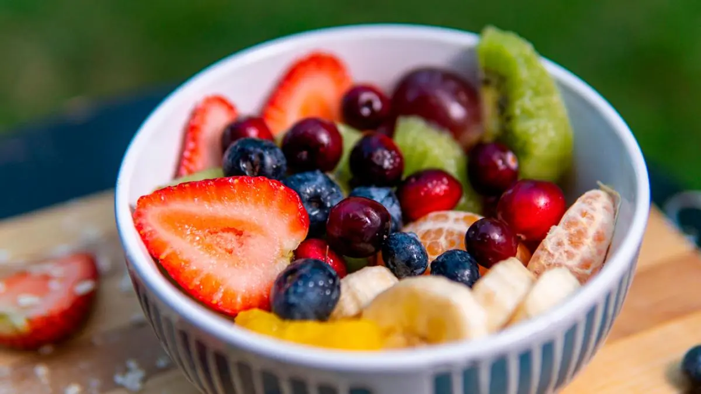

¿Es realmente bueno comer fruta por la noche?
Nuestro nutricionista Aitor Sánchez resuelve las dudas de los lectores. ¿Debemos eliminar la salsa de soja en nuestra alimentación?
¿Qué comer si tienes resistencia a la insulina?
La situación de resistencia a la insulina está muy vinculada a otras patologías y forma parte de lo que se conoce como prediabetes, es un estado en el que nuestro cuerpo todavía no ha desarrollado una diabetes tipo 2 pero está muy cerca de ello, la buena noticia es que tenemos margen de mejora y que si seguimos unos hábitos de vida saludables podríamos llegar a evitarlo.
El enfoque nutricional es muy parecido, sólo que además no estaremos tan condicionados con la medicación dado que muchas veces en el tratamiento de la diabetes tipo 2 se suele incluir insulina o el uso de antidiabéticos orales.
Los pilares fundamentales que trabajaremos serían los siguientes:
-
El estado nutricional. La resistencia a la insulina se ve favorecida por un excesivo acúmulo de grasa, así que seguir una alimentación que esté enfocada a la pérdida de grasa (especialmente visceral) es muy efectivo. La mejor forma de hacerlo es con una alimentación saludable, con los mismos consejos que compartimos cada semana en el consultorio. Me permitiría destacar que en este caso tiene todavía más importancia la actividad física, dado que mejora la sensibilidad de nuestro cuerpo a la insulina y va a hacer que la situación mejore mucho más.
-
Fuentes y cantidad de hidratos de carbono. Como nuestro cuerpo no tolera de una manera tan adecuada a los hidratos de carbono es importante restringir aquellos que no sean saludables (dulces, bollería, refrescos...), Esto no quiere decir que tengamos que limitar aquellas fuentes que sean saludables como las legumbres, las frutas y las verduras, pero sí que debemos prestar atención a que alimentos como las patatas, el arroz o las pastas, estén acordes a nuestra actividad física. Si no estamos haciendo mucho ejercicio, es mejor que tengan menos importancia en nuestra alimentación.
-
Origen de la proteína. En las últimas dos décadas hemos avanzado mucho a nivel científico sobre cómo el consumo de proteína de origen animal no es el más adecuado para la prevención y para el manejo de la diabetes, por ese motivo es importante aumentar la cantidad de legumbres que tomamos a la semana y que especialmente lo hagamos reduciendo la cantidad de carnes y huevo. También sabemos que da buenos resultados el incluir bebidas vegetales en sustitución de lácteos, de modo que si te gusta la bebida de soja también puede ayudar a reducir quesos y leche.